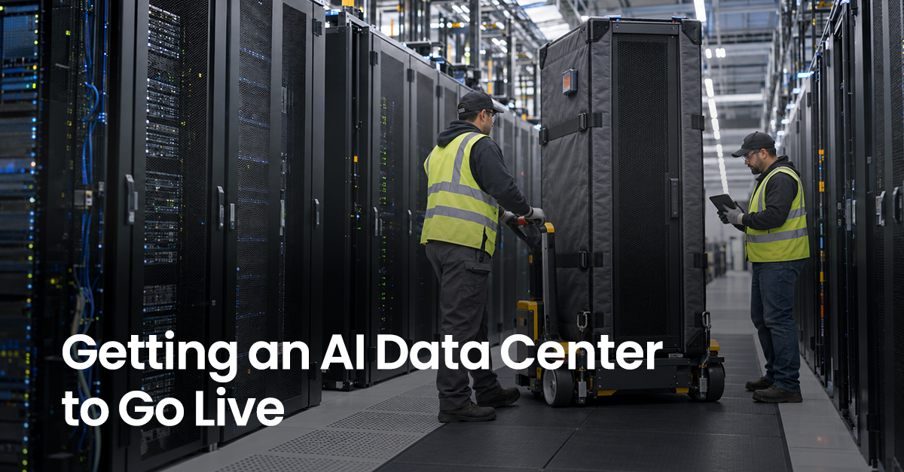
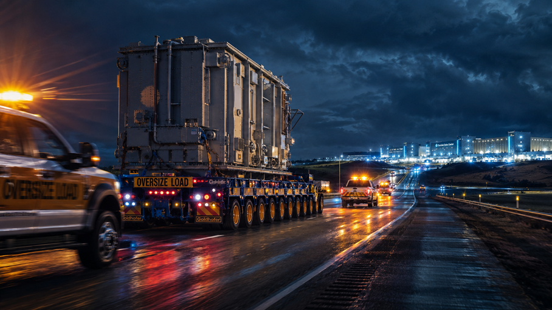
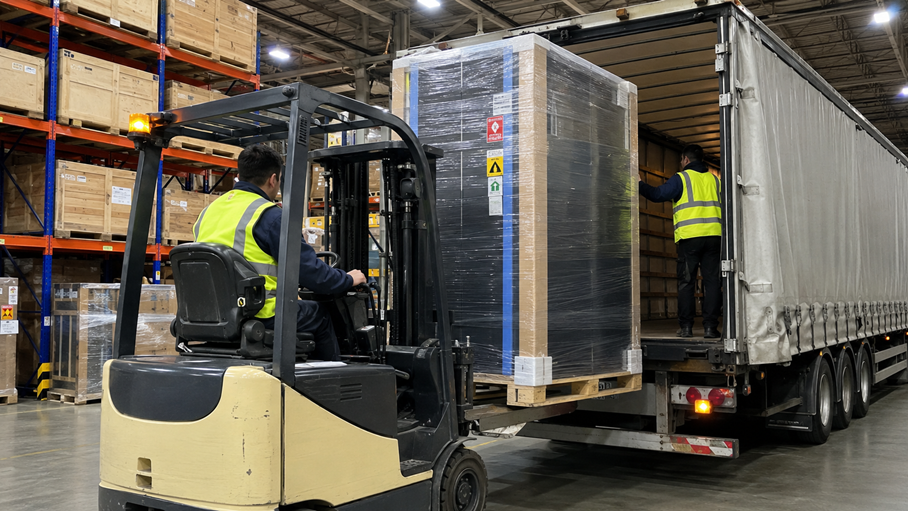

By Cello Square (Samsung SDS Logistics)Last updated: 29 July 2026
The Logistics Critical Path That Sets the Schedule — from power gear to GPUs, different flows converge on one timeline

Executive summary
An AI data center's go-live schedule is not decided by GPUs alone. Long-lead foundational systems such as power and cooling must be secured on time and delivered in step with on-site construction, and each equipment group needs a different logistics design — from heavy ocean freight to high-security air transport. In this article, “go-live” means the state in which a data center can begin actual operation after foundational build-out and equipment delivery, installation and commissioning.
| Equipment group | Representative cargo | Main logistics mode | Key challenge |
|---|---|---|---|
| Power infrastructure | EHV transformers, switchgear | Heavy ocean freight, project logistics | Long-lead ordering, ultra-heavy inland moves |
| Cooling / mechanical | CDUs, chillers, heat exchangers | Ocean freight, specialized road transport | Phase coordination, precision handling |
| Network / cabling | Switches, optical modules, cable | Bulk ocean, air express | Mixing bulk and high-value cargo |
| Servers / finished racks | Liquid-cooled server racks, cabinets | Ocean/inland multimodal | Vibration control, delivery sequence |
| Urgent / expansion parts | GPUs, accelerators, spares | High-security air transport | Tracking, security, uptime |
As AI infrastructure investment expands rapidly, demand for data center construction and related equipment is rising with it. Major hyperscalers are continuing large-scale capital spending centered on AI infrastructure in 2026, though forecasts vary considerably by source and timing.
In some large projects, however, securing power and procuring certain critical equipment can take longer than putting up the building. In some US markets, obtaining new power capacity reportedly takes three to four years — longer than constructing the facility itself. The go-live date is therefore set not only by the construction schedule but by each system's order timing and its transport and delivery plan.
This article looks at an AI data center not as an equipment list but as the procurement-and-logistics critical path that determines go-live. One premise should be clear: a long lead time does not automatically make every system a bottleneck. A piece of equipment enters the project's critical path only when its ordering, transport and delivery start to delay downstream installation and commissioning. It is not the most expensive equipment but the equipment you fail to secure in time that pushes the schedule.

1. What must be ordered first — power infrastructure
The point about power infrastructure is not that it 'arrives first' but that the order decision must be made first. Large power transformers are a classic long-lead item. According to Wood Mackenzie, average transformer lead times rose from about 50 weeks in 2021 to about 120 weeks in 2024, with large substation power and GSU transformers running roughly 80–210 weeks. Depending on product, market and manufacturer, waits of several years can occur, so data center projects must lock in procurement timing from the earliest stage. Regardless of its share of cost, a delay in a critical link of the power chain pushes back downstream installation and commissioning — so it carries the highest ordering priority. The US, in particular, relies heavily on imports for large power transformers: the US Department of Energy found that more than 80% of new (>60MVA) transformer demand was imported in 2019, and Wood Mackenzie estimates that about 80% of US power transformer supply will be met by imports in 2025. That makes the ability to manage overseas supply chains together with ultra-long lead times decisive for the procurement schedule.
In logistics terms, an EHV transformer — up to several hundred tonnes each and irregularly shaped — falls under project logistics, not standard container shipping. Ocean legs typically use breakbulk or heavy-lift vessels, while road legs use multi-axle or modular trailers and other specialized equipment depending on weight and road conditions, accompanied by transit permits, escort vehicles, bridge-load analysis and night moves. The key is connecting and coordinating everything — from heavy-lift port handling to inland specialized transport to remote sites — into a single schedule.
Ultimately, power infrastructure logistics is less about simple transport and more about project management of ultra-long lead times back-calculated from the go-live date.
2. What makes AI data centers different — cooling and mechanical systems
Cooling is the decisive factor separating ordinary data center logistics from AI data center logistics. As AI workloads sharply raise per-rack power density, a leading high-density rack — NVIDIA's GB200 NVL72 — draws about 120kW at the rack level. Because conventional air-cooled setups alone struggle to handle such heat density, liquid cooling such as direct-to-chip is being adopted rapidly. Goldman Sachs has forecast that liquid-cooled AI servers will rise from 15% in 2024 to 54% in 2025 and 76% in 2026 (a forecast, not measured data, and on an AI-server basis — different from the share of all new data center builds).
This shift carries straight into logistics. CDUs, chillers and heat exchangers are cargo to which different methods apply depending on size, weight and site installation conditions — from standard ocean freight to heavy-lift and OOG (out-of-gauge) project transport and specialized road transport. Moreover, these systems often must be installed and tested before servers arrive, tied to the building and mechanical schedule. In other words, cooling and mechanical systems are not 'after' the servers but foundational systems that first create the conditions for servers to come in. Expansion projects that add cooling capacity may require additional procurement and transport of such equipment.

3. The connections that complete go-live — network and cabling
The network segment is characterized by opposite logistics coexisting in one category. High-value, small items like switches and optical modules skew toward air as deadlines tighten, while high-volume items such as fiber, coaxial/power cable, connectors and patch panels lend themselves to ocean freight. Even within 'network equipment,' the transport design diverges by cargo characteristics and deadline.
This section focuses on network equipment for the initial build. Replacement parts for post-go-live fault response and expansion are covered separately below (Section 5).

4. What gets deployed in volume — precision multimodal for servers and finished racks
Servers and compute demand both volume and precision. Liquid-cooled cabinets shipped as integrated racks with GPUs, memory and network gear installed are large and high-value, and sensitive to shock, tilt and vibration. Rack enclosures are handled in this segment too. Server racks and cabinets move from production and integration hubs to the data center site by a combination of ocean or air and inland transport, with the mode varying by cargo value, weight, deadline and on-site delivery schedule. Transloading, storage and final trucking across each leg must connect into one operating plan.
On hyperscale sites in particular, the delivery sequence is the heart of logistics. Data centers are typically built in phases — foundation, structural, MEP (electrical/mechanical), then commissioning — and equipment must be delivered in step with those phases. On large campuses, many deliveries can concentrate in a short window, so the ability to sequence deliveries and manage inventory from a nearby staging warehouse becomes a decisive factor in preventing completion delays.
This segment is less about ultra-heavy, out-of-gauge project logistics and more about precision multimodal transport — flowing high-value, precision cargo accurately in step with the construction phases.

5. What must move fastest — GPUs, accelerators and urgent spares
From the final stretch of construction through post-go-live operation, logistics continues. Critical parts needed for installation delays, fault response and capacity expansion may move by high-security air transport to reduce downtime and schedule slippage.
Distinct from rack-level bulk delivery (Section 4), this section focuses on individually supplied high-value parts and urgent/expansion demand. Parts such as GPUs and accelerators are high in unit value, small in volume and high in theft/damage risk, so where deadlines are tight or high security is required, air transport combined with insurance, security and tracking can be used. Industry reports describe cases of moving large AI server and GPU racks by chartered freighter. Items handled in bulk during the initial build, such as replacement optical modules and transceivers, can also become urgent air-freight candidates during fault response or expansion.
(Semiconductor manufacturing equipment and memory production-line logistics belong to a different supply chain from data center construction and are not covered here.)
Conclusion — data center logistics is orchestration
For a single AI data center to go live, power, cooling, network, servers and urgent parts must converge on one project schedule despite different procurement times, transport modes and delivery conditions. Locking in long-lead equipment first, building the foundational systems, completing the connections, deploying compute, and supporting urgent post-go-live operations all mesh in parallel. If any one falls off the critical path, the whole go-live slips.
That is why the essence of data center logistics is orchestration, not individual transport. When ultra-heavy project logistics, precision multimodal, high-security air transport, and staging and on-site delivery mesh into one schedule, logistics becomes not a cost that trails the project but a lever that pulls the go-live date forward.
Samsung SDS Logistics supports the complex logistics flows of large infrastructure projects on the basis of ocean and air international transport, inland transport, warehousing and project-logistics capabilities. In data center projects too, logistics design that accounts for each system's lead time and the on-site schedule is essential. If you need logistics aligned to your project schedule, talk to us.
Frequently asked questions (FAQ)
- Q. When should I start logistics planning for data center equipment?
- Align it with the order date of the longest-lead-time equipment. For items that can take years to procure — such as large power transformers — it is safest to back-calculate lead times and set order and transport plans before the site and design are even finalized. If you defer logistics planning until after construction begins, the critical path may already be off track.
- Q. How are ultra-heavy power devices such as EHV transformers shipped?
- They are handled as project logistics, not standard container freight. Ocean legs use breakbulk or heavy-lift vessels; road legs use multi-axle or modular trailers and other specialized equipment depending on weight and road conditions, with transit permits, escorts, bridge-load analysis, heavy-lift port handling and inland specialized transport connected into a single plan.
- Q. When are high-value parts like GPUs and optical modules shipped by air?
- There is no fixed rule — it depends on conditions: unit value and volume, delivery urgency, supply scarcity, insurance and security requirements, and whether the item ships integrated into a rack. Individually supplied, high-value or urgent parts skew toward air, while large volumes consolidated at rack level may be better suited to ocean or multimodal transport.
- Q. What matters most when shipping finished server racks?
- Shock, tilt and vibration control, and the on-site delivery sequence. Racks are high-value, precision cargo, so vibration mitigation in transit is important, and on hyperscale sites equipment must be delivered in step with the foundation, structural, MEP and commissioning phases. The ability to sequence deliveries from a nearby staging warehouse can make or break the completion schedule.
- Q. How is data center project logistics different from ordinary import/export?
- It is not about 'sending' individual shipments, but about making equipment with widely different lead times 'arrive in the right order' against a single go-live schedule. Ultra-heavy and out-of-gauge cargo, high-security cargo and high-volume cargo are mixed together, and procurement, ocean, port, inland, staging and on-site delivery must all be connected into one plan.
References
Primary sources underpinning the facts in this article. Macro figures such as 2026 investment forecasts vary by source and timing, so the body reflects direction rather than specific numbers. Verify regulatory and market conditions at time of publication.
- 1. CreditSights, "Tech: Raising Hyperscaler Capex 2026 Estimates" (2026) — top-5 hyperscaler 2026 capex outlook (raised to ~US$750B, ~+67% YoY). Used as industry background only.
- 2. Wood Mackenzie, "Supply shortages and an inflexible market give rise to high power transformer lead times" (Apr 2024) and "Transformer troubles" (2025); U.S. Department of Energy, "Large Power Transformer Resilience Report to Congress" (2024) — transformer lead times (avg. ~50 weeks in 2021 → ~120 weeks in 2024; large substation power/GSU ~80–210 weeks) and high US import reliance (DOE: >80% of 2019 new >60MVA transformer demand imported / Wood Mackenzie: ~80% of 2025 US power transformer supply expected to be imported).
- 3. Schneider Electric, "Data center power density / Overcoming power constraints" (2025–2026) — new power capacity lead times of 3–4 years in some US markets; high-density data center cooling.
- 4. NVIDIA, "DGX GB200 NVL72 / Rack-scale Systems" product documentation — GB200 NVL72 rack power ~120kW.
- 5. Goldman Sachs forecast (cited by Lombard Odier, 2026) — liquid-cooled AI servers rising 15% (2024) → 54% (2025) → 76% (2026).
- 6. Data center project logistics practice (ultra-heavy/out-of-gauge project cargo, ocean plus engineered road transport, vibration-sensitive server racks, phase-linked sequenced delivery, staging) — Omni Logistics, Phoenix Logistics, Crane Worldwide Logistics and other industry sources (2025–2026).
- 7. Samsung SDS Cello Square — international transport, inland transport, warehousing and project logistics services. cello-square.com.
▶ This content provides general information on AI data center logistics and does not constitute procurement, transport or regulatory advice for any specific project. Confirm project-specific requirements with qualified professionals and current sources.
▶Unauthorized reproduction, adaptation, or commercial use of this content without prior consent is prohibited. © Cello Square (Samsung SDS). All rights reserved.